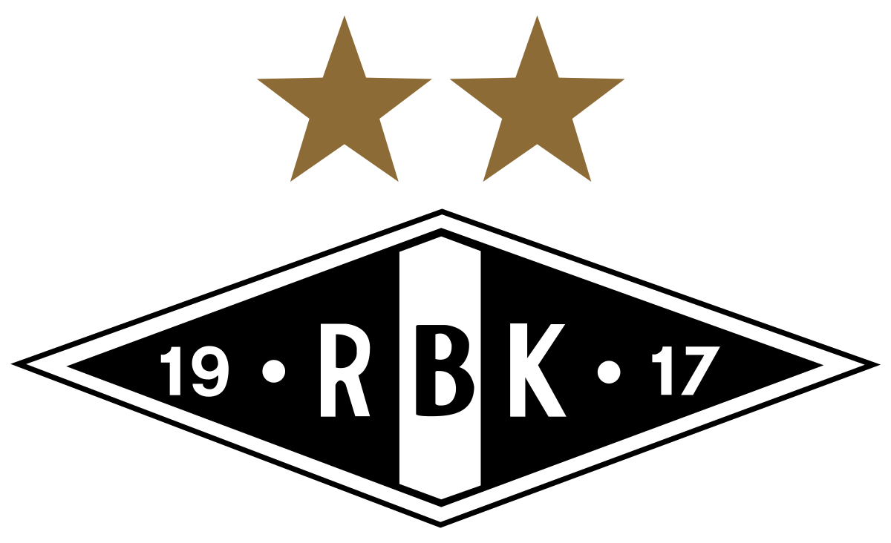

| Plassering | Lag | Kamper | Seiere | Uavgjort | Tap | Poeng |
|---|---|---|---|---|---|---|
| 1 | Rosenborg | 21 | 14 | 4 | 3 | 46 |
| 2 | Brann | 21 | 13 | 5 | 3 | 44 |
| 3 | Haugesund | 21 | 11 | 5 | 5 | 38 |
| 4 | Molde | 21 | 10 | 4 | 7 | 34 |
| 5 | Ranheim | 21 | 10 | 4 | 7 | 34 |
| 6 | Vålerenga | 21 | 9 | 6 | 6 | 33 |
| 7 | Sarpsborg 08 | 21 | 9 | 5 | 7 | 32 |
| 8 | Tromsø | 21 | 9 | 2 | 10 | 29 |
| 9 | Kristiansund | 21 | 7 | 7 | 7 | 28 |
| 10 | Odd | 21 | 7 | 6 | 8 | 27 |
| 11 | Bodø/Glimt | 21 | 6 | 8 | 7 | 26 |
| 12 | Strømsgodset | 21 | 5 | 7 | 9 | 22 |
| 13 | Lillestrøm | 21 | 4 | 7 | 10 | 19 |
| 14 | Stabæk | 21 | 4 | 7 | 10 | 19 |
| 15 | Start | 21 | 4 | 5 | 12 | 17 |
| 16 | Sandefjord | 21 | 2 | 6 | 13 | 12 |